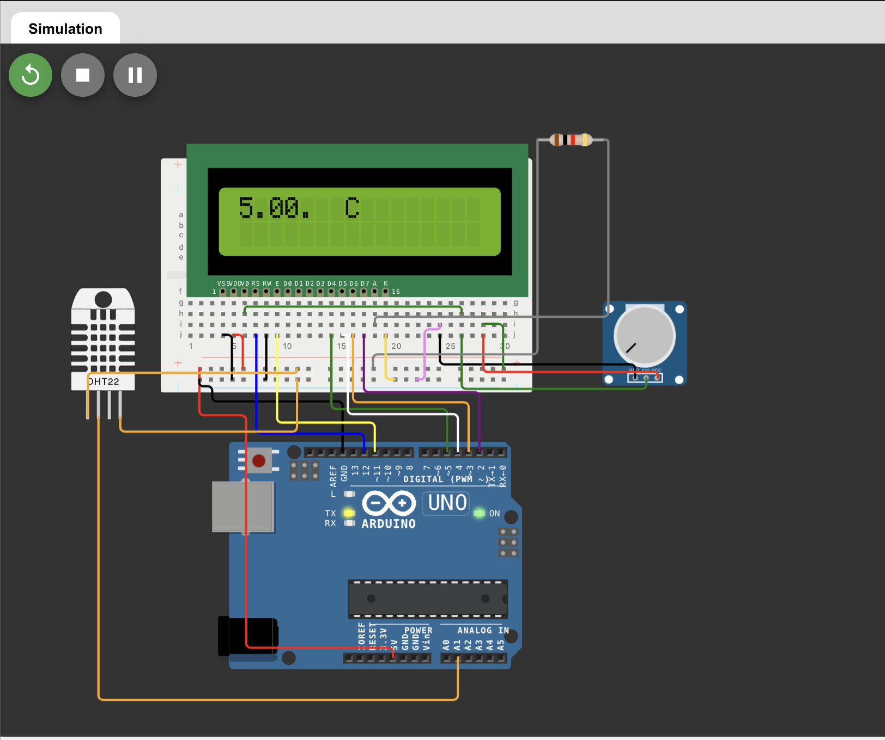

01
Title: Portfolio
Medium: html on spaces.w3schools
Process & Intention: To offer a comprehensive insight into my creative journey, skills, knowledge, and style through a thoughtfully designed digital portfolio website. The purpose is to provide a structured and straight-forward platform to explore my academic projects and creative works. The intention is to demonstrate my commitment to academic excellence, and showcase my unique talents and accomplishments; allowing those who review it to gain a understanding of my capabilities, passion for learning, and potential contributions to the community.
02
Title: Quantum Computing
Medium: Google Sites
Process & Intention: My inspiration was to deliver a comprehensive and accessible resource explaining fundamental aspects of Quantum Computing. Fueled by a curiosity and fascination with Quantum Computing, I wanted to create a user-friendly platform and contribute to sharing knowledge in a field that holds immense promise for the future. My aim was to provide a clear narrative on what quantum computers are, delve into their historical development, and explore both potential risks and benefits associated with this powerful technology. I envision this work as a stepping stone, sparking curiosity and encouraging further exploration of the fascinating realm of quantum technology.
Quantum Computing web03
Title: 4-Function Calculator
Medium: JavaScript Graphics on CodeHS
Process & Intention: My primary goal was to design a user-friendly and visually appealing interface for performing basic calculations. I wanted users to have an intuitive experience, allowing them to input numbers and operators with ease. I utilised functions to handle different aspects of the calculator, such as designing the graphical interface, checking whether a clicked object is a number or an operation button, updating and clearing the displayed numbers, and performing the actual calculations. What I learned from writing the code is the importance of modularity in coding. Breaking down the functionality into smaller, manageable code, making it more readable, maintainable, and easier to debug. I envision this work as a foundation for more advanced features and improvements.
Calculator Code PDF04
Title: Drawing
Medium: JavaScript Graphics on CodeHS
Process & Intention: In developing this simple drawing program, my inspiration stemmed from interactive drawing features commonly found in touch-based devices, such as tablets and smartphones. The primary objective was to create a canvas that provides users with an enjoyable intuitive drawing experience. I showcased my understanding of event-driven programming, specifically utilising an event handler for mouse interaction/drag events. I learned how to translate user interactions during mouse dragging events into graphical responses and positions in the interface.
Drawing Code PDF05
Title: BMI Calculator
Medium: JavaScript Graphics on CodeHS
Process & Intention: The purpose of the BMI Calculator program is to give a quick and simple way to check whether weight is within a healthy range for height. Research has shown that there is a strong correlation between BMI and risk of developing health conditions. Developing the program gave me the ability to design a dynamic and responsive graphical interface and strengthened my programming skills, like iteration, error handling, code optimization, an understanding of algorithmic efficiency, handling data structures, management of user input, and implementation of calculations.
BMI Code PDF{kind=link}
06
Title: BeeHive
Medium: Arduino
Process & Intention: Creating an advanced monitoring system for the school's beehives; I specifically focused on developing a humidity measuring component and understanding the functionality of a LCD screen to project these measurements. My responsibility extended to deciphering the LCD, not just for my own task but for my classmates to recreate and project their measurements efficiently, including tasks such as weight sensors. The ultimate goal was to contribute to the well-being of the bee colonies, enhancing our understanding of hive conditions and fostering sustainable hive management within the school community.


07
Title: Ancient Egypt Drawing
Medium: Drawn on iPad Goodnotes 6
Process & Intention: My inspiration for this piece is my culture and ethnicity.
The scarab is a symbol of birth, life, death, and resurrection. The figure stands with outspread wings supported by Cleopatra’s arms, a prevalent symbol in Egyptian art. The Sun represented life, warmth, and growth. The Eye of Ra is a source of heat and light, associated with fire and flames. The core of the split sun is held by the scarab to project onto the pyramid. I added stars since the Egyptians aligned the pyramids and temples toward the north since it was believed the pharaohs became stars in the northern sky after passing. All design elements combined are in the shape of the ‘Ankh’ known as “the key of life” representing union and life itself.
My desired experience for anyone who views it is an appreciation for the cultural inspiration, and to be awed by the beauty and symbolism embedded in the artwork. I hope the viewer gets a glimpse into the world of ancient Egypt through my interpretation.
08
Title: Cactus NFT
Medium: Photoshop
Process & Intention: In creating this project, I chose a pixelated style for the cactus images, giving it a unique digital aesthetic. The video features the cactus against different backgrounds – clear day, serene sunset, starry night, etc... The intention is to blend elements of nature and digital art. The project, was inspired by the uprise of NFTs, it explores the concept of uniqueness in each iteration, creating a dynamic and visually engaging experience.
09
Title: Hubba Bubba x Fight Club
Medium: Drawn on iPad Procreate
Process & Intention: This project serves as a bridge between traditional and digital art for me. By taking an old drawing and incorporating it into Procreate, I learned the transformative powers of digital tools in artistic expression. This piece extended a traditional artwork and brought new life into it. The process of completely changing the image to create a more creative and colourful piece allowed me to experiment with digital techniques, layering, and blending to achieve a unique visual outcome. In this piece, I pushed the boundaries by combining two completely random things (Hubba Bubba x Fight Club); I see this leading me towards further experimentation with unconventional creativity. In crafting this piece, my intention was to challenge a thought-provoking response from the viewer.
10
Title: Spirit, Mind, Body
Medium: Canva, Procreate
Process & Intention: For a business project we were tasked to create and sell a product in school for ‘Falcons souk’. I created a gym shirt (“pump-cover”) that promotes spirtuality; with the angel number 222 - associated with balance; the Arabic phrase “Everything happens for a reason” to connect culturally to the UAE; and an “F” on the shoulder for Falcon[s] (school mascot) to foster a sense of community. Designed for workouts, it serves a dual purpose of protection and motivation. All profits made through the selling of shirts were contributed to charity, adding a meaningful aspect to the project.
-This was a collaborative project with 2 other classmates but I was the sole creator of all designs and logos-
Email: jammar.3221@gmail.com
Email: jammar.24@asdubai.org